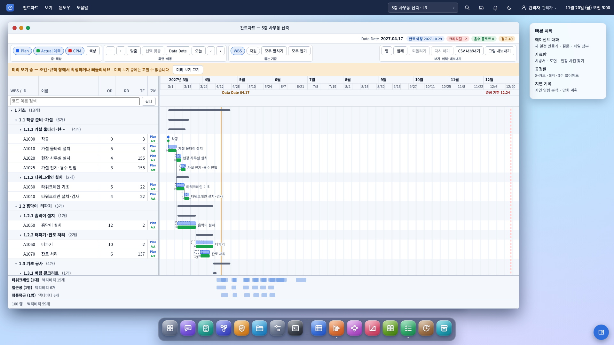

기본·분야·내 규칙·입력 조건을 4겹으로 조립·점검합니다. 자동 점검 불가 조건은 「자동 점검 안 됨」으로 명시합니다.
③ AI는 제안, 사람은 승인
준공·마일스톤·크리티컬·조건 변경은 승인함으로 이동합니다. 거부 시 사유를 반영해 재작성하며 모든 변경은 버전으로 되돌립니다.
2. 솔루션 및 완성도 — 세 가지 고통을 끝내는 실제 동작 화면 심사 30%
ChronOS는 에이전트 하나가 ReAct 루프로 동적 워크플로우를 실행하고, 사람은 필요한 창만 열어 확인·승인하는 에이전트 OS입니다. 사무실 PC에서는 다중 창 멀티태스킹, 현장에서는 스마트폰 전용 앱(`MobileShell`, ≤768px 자동 전환)으로 동작합니다.

[고통 ① 해결] 조건·규칙에서 타워크레인 1→2대 변경 시 간트에 점선으로 즉시 미리 보기(준공 10.29 → 09.24)[고통 ② 해결] "골조 3일 지연" 한 줄 → 만회안 A/B 자동 생성 → 같은 차트·다중 안 요약표에서 즉시 비교[고통 ③ 해결] 중요 변경(준공·크리티컬·조건)은 사유·영향 요약과 함께 승인함으로 → 공종/PM 검토 후 1클릭 승인[투명한 에이전트] 개발 콘솔에서 ReAct 루프·컨텍스트 8종 비중·하네스 점검/고침 회차·승인 분기를 SVG로 실시간 추적
만든 것 / 설계만 된 것 구분표 (2026-11-21 기준 · 계획 1·2·3 전체 구현 완료)
영역
구현·동작 완료 (커밋 및 자동 테스트 검증)
설계만 됨 (향후 과제)
OS 셸 & 모바일
15개 프로그램 OS 셸(Dock·메뉴바·빠른 시작·모니터 자동 조정·밝은/어두운 테마) + 스마트폰 전용 `MobileShell`(하단 5탭바·현장 사진 첨부·이동 중 승인)
—
에이전트 & 추적
ReAct 루프(12단계)·동적 워크플로우 기록·컨텍스트 8종(날짜 도우미 포함)·대화 카드 13종·개발 콘솔(전체 구조 + 이번 턴 실행 흐름도 SVG)
워크플로우 스킬 저장·재실행
일정 생성·가져오기
동적 질문지·조건 추출·WBS→초안→코드 계산→하네스 점검→고침(최대 5회)·L1~L5 정밀도·엑셀/CSV 공정표 자동 감지 및 가져오기